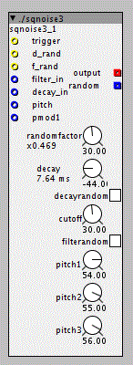

A percussion generator subpatch with random options
Version 3 , date 11-08-2015 time 15.00
sqnoise3.axs (13.7 KB)

Functions:
Inputs:
- Trigger
- F-rand (external trigger on/off for filterandom)
- D-rand (external trigger on/off for decayrandom)
- Filter frequency
- Decay time
- Pitch
- Pitchmod1
Controls:
- Randomfactor
- Buttons for filterandom and decayrandom
- Decay
- Pitch1
- Pitch2
- Pitch3
Output:
- Audio
- Random
The percussion oscillators are 3 squarewaves that control each others pitch
Filter = bandpass
The external trigger on/off is routed through an XOR gate, so you can:
set the control to 'on' and use the trigger to turn it off and on
set the control to 'off' and use the trigger to turn it on and off